Messo in Conto
base.cesira.LoMettoInConto · Giudizio: in attesa.
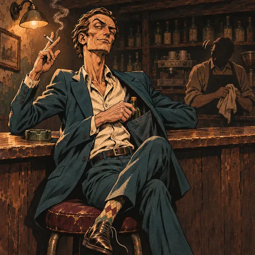
A 60 px
Sergio e bottiglia visibili; mani e presa minute, barista sullo sfondo.
Le 22 immagini sono in attesa del giudizio del proprietario. I campi non salvano automaticamente il testo. Registro.
base.cesira.LoMettoInConto · Giudizio: in attesa.

A 60 px
Sergio e bottiglia visibili; mani e presa minute, barista sullo sfondo.
base.cesira.bound.NeRiparliamoFuori · Giudizio: in attesa.

A 60 px
Due figure e gesto leggibili; mani minute, una figura parzialmente fuori campo.
base.cesira.bound.Battutina · Giudizio: in attesa.
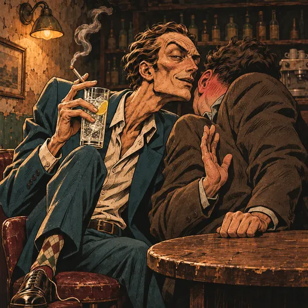
A 60 px
Due figure vicine e bicchiere distinguibili; mani e dita minute.
base.cesira.bound.FareIlVago · Giudizio: in attesa.
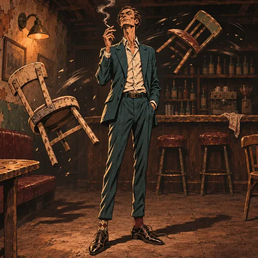
A 60 px
Sergio e sedie distinguibili; mano in tasca, dita e dettagli minuti.
base.cesira.OhGuardaLa · Giudizio: in attesa.

A 60 px
Due figure e gesto leggibili; dita e sigaretta minute.
base.cesira.Ricatto · Giudizio: in attesa.

A 60 px
Telefono e due figure distinguibili; schermo e dita minuti.
base.cesira.LoSapevo · Giudizio: in attesa.
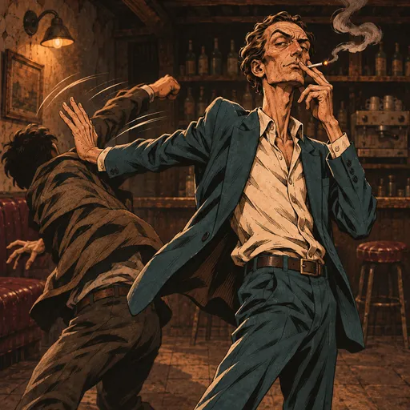
A 60 px
Due figure e gesto leggibili; dita minute e arti avversari parzialmente coperti.
base.cesira.ContoSalato · Giudizio: in attesa.
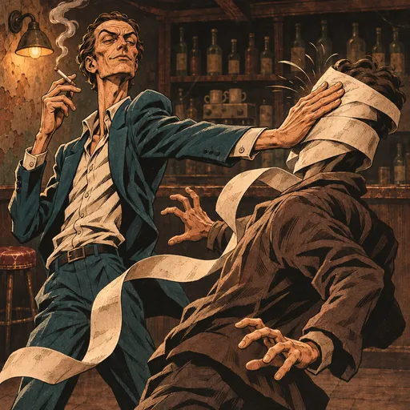
A 60 px
Due figure e carta visibili; mani e segni sulla carta minuti.
base.cesira.LoSannoTutti · Giudizio: in attesa.
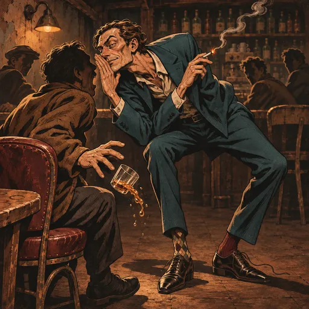
A 60 px
Due figure in primo piano leggibili; bicchiere e mani minuti.
base.cesira.Malelingue · Giudizio: in attesa.
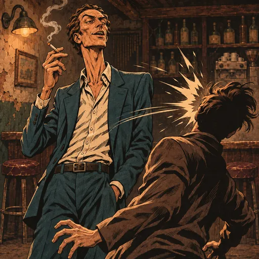
A 60 px
Due figure e segno di impatto leggibili; mani e dita minute.
base.cesira.LoRivendo · Giudizio: in attesa.
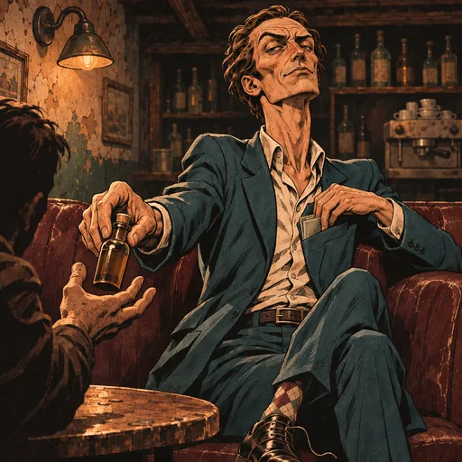
A 60 px
Bottiglietta e figure distinguibili; banconote e dita minute.
base.rocco.PrimaIo · Giudizio: in attesa.
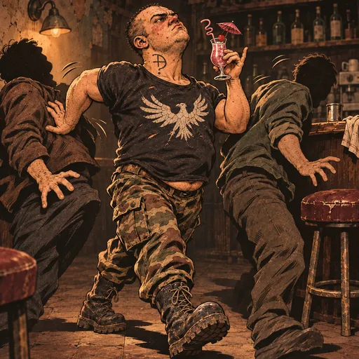
A 60 px
Duccio e due avventori distinguibili; cocktail e mani minuti.
base.rocco.bound.Colpetto · Giudizio: in attesa.
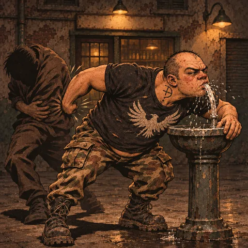
A 60 px
Duccio, fontanella e avversario leggibili; dita e getto minuti.
base.rocco.bound.MiRialzo · Giudizio: in attesa.
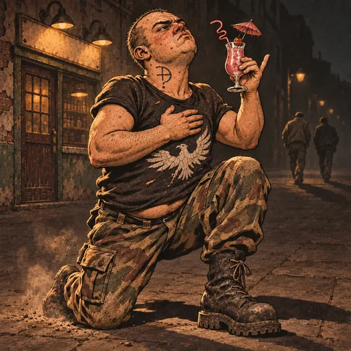
A 60 px
Duccio in ginocchio distinguibile; cocktail e figure lontane minuti.
base.rocco.bound.AlzoLaVoce · Giudizio: in attesa.
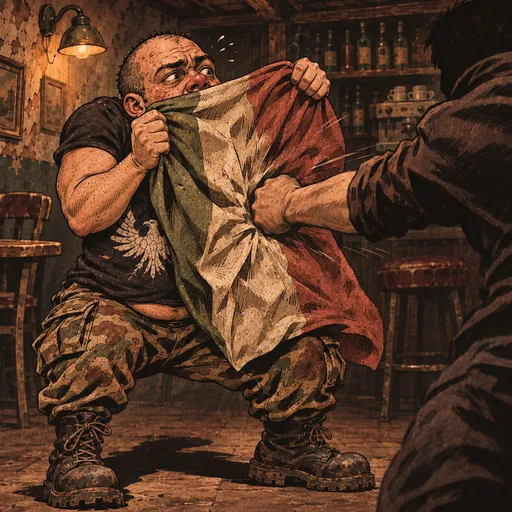
A 60 px
Duccio, bandiera e braccio avversario leggibili; mani minute.
base.rocco.NeHoPreseDiPeggio · Giudizio: in attesa.

A 60 px
Duccio e sagoma avversaria leggibili; pugni minuti.
base.rocco.NoccheSbucciate · Giudizio: in attesa.

A 60 px
Duccio e avversario leggibili; nocche e mani minute.
base.rocco.Incassare · Giudizio: in attesa.

A 60 px
Duccio, avversario e busto distinguibili; cocktail e mani minuti.
base.rocco.EAllora · Giudizio: in attesa.
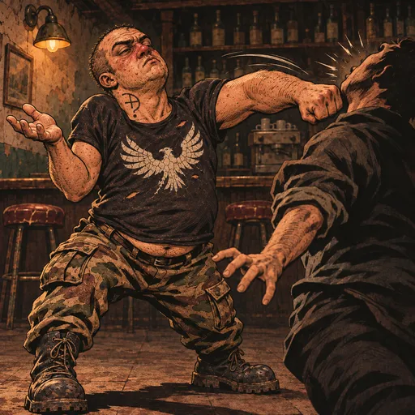
A 60 px
Duccio e avversario leggibili; pugno e mani minute.
base.rocco.Capocciata · Giudizio: in attesa.
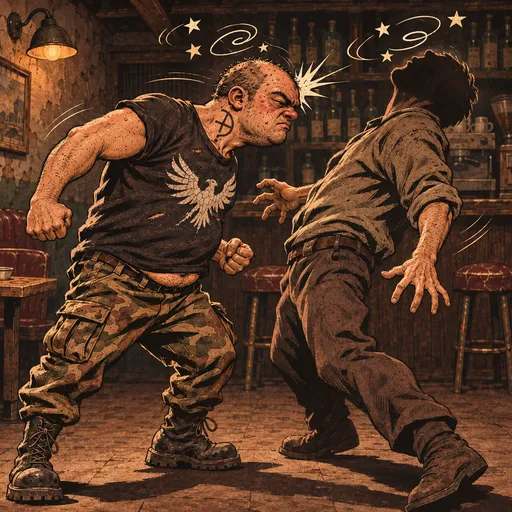
A 60 px
Due figure e testata leggibili; stelle e dita minute.
base.rocco.TeLoSpiegoIo · Giudizio: in attesa.

A 60 px
Due figure e gesto leggibili; cocktail e dita minuti.
base.rocco.TestaDura · Giudizio: in attesa.
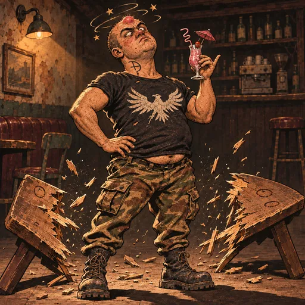
A 60 px
Duccio e tavolo spezzato distinguibili; cocktail e schegge minute.